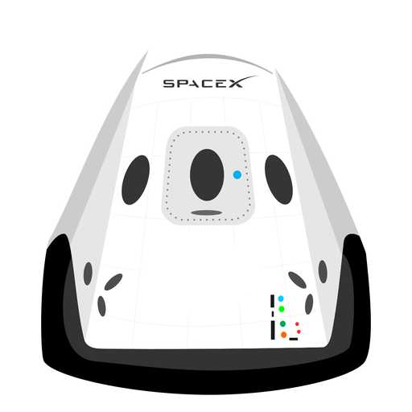

Hyperblog
Tu blog de cabecera
Aquí inicia la historia de un gran proyecto
Y este es el párrafo de inicio donde vamos a explicar cosas increíbles que se pueden hacer con ramas.

Los blogs son la mejor forma de compartir información y tus ideas. Mucho más que ir a conferencias o salir por Youtube. Excepto si eres un rockstar. Pero estadísticamente no lo eres... Por ahora.
Suscríbete y dale like c: Vengo con todo el estito pupilo yo te aniquilo.